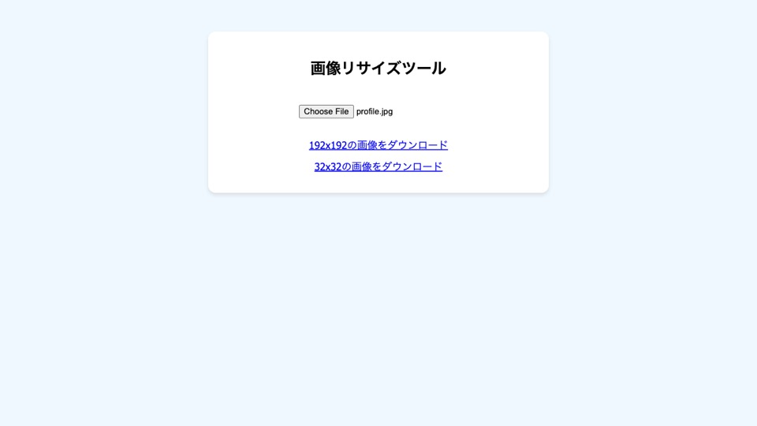

Web ツール
ImageResizer
画像を 192px または 32px の正方形アイコンに変換する、ブラウザー上のツールです。
公開根拠 選択画像をブラウザー内で読み込み、192px と 32px の canvas に描画して PNG ダウンロードリンクを生成します。
根拠を見る （新しいタブで開きます） ↗
Web ツール
画像を 192px または 32px の正方形アイコンに変換する、ブラウザー上のツールです。
公開根拠 選択画像をブラウザー内で読み込み、192px と 32px の canvas に描画して PNG ダウンロードリンクを生成します。
根拠を見る （新しいタブで開きます） ↗